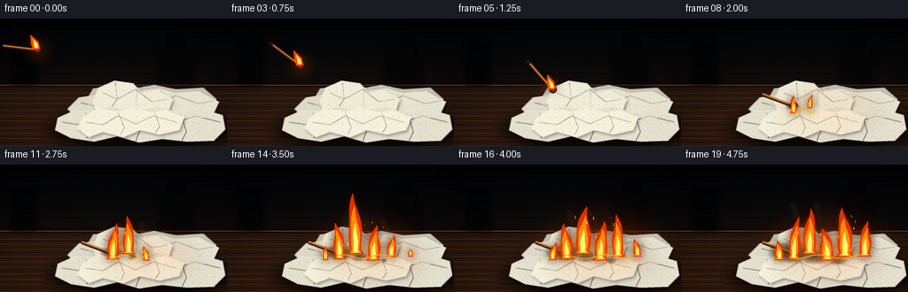
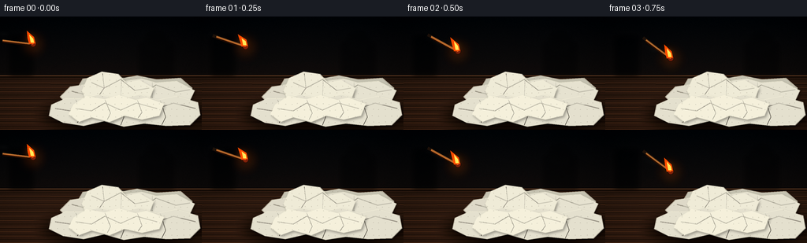

CODING AGENTS AS PIXEL WORLD MODELS
traex/GPT-5.6-Sol · material_0029
点击播放 · 原生 RGB 像素
逐轮保存的候选
回放视频、检查图与代码变化。
每份候选均可单独播放。实际图片检查记录在下方工具轨迹中。
候选 01播放与检查图
点击播放 · 原生 RGB 像素


展开代码变化
--- 上一保存版本
+++ 本次保存版本
@@ -0,0 +1,362 @@
+from pathlib import Path
+import math
+import numpy as np
+from PIL import Image, ImageDraw, ImageFilter
+import artifact_io
+
+# Deterministic procedural text-to-video renderer.
+W, H, N = 256, 144, 20
+S = 4
+WS, HS = W*S, H*S
+ROOT = Path(__file__).resolve().parent
+
+
+def sc(v):
+ return int(round(v*S))
+
+
+def pts(seq):
+ return [(sc(x), sc(y)) for x, y in seq]
+
+
+def rgba_layer():
+ return Image.new("RGBA", (WS, HS), (0, 0, 0, 0))
+
+
+def smooth_poly(draw, coordinates, fill):
+ draw.polygon(pts(coordinates), fill=fill)
+
+
+def point_on_curve(p0, p1, p2, t):
+ u = 1-t
+ return (u*u*p0[0] + 2*u*t*p1[0] + t*t*p2[0],
+ u*u*p0[1] + 2*u*t*p1[1] + t*t*p2[1])
+
+
+def glow_ellipse(image, xy, color, blur):
+ lay = rgba_layer(); d = ImageDraw.Draw(lay)
+ d.ellipse(tuple(sc(v) for v in xy), fill=color)
+ lay = lay.filter(ImageFilter.GaussianBlur(sc(blur)))
+ return Image.alpha_composite(image, lay)
+
+
+def make_background():
+ rng = np.random.default_rng(2904)
+ yy, xx = np.mgrid[0:HS, 0:WS]
+ y = yy / S
+ x = xx / S
+ horizon = 75
+ # A dark, cinematic room above a warm wood tabletop.
+ top_t = np.clip(y / horizon, 0, 1)
+ r = 7 + 13*top_t
+ g = 10 + 7*top_t
+ b = 13 + 3*top_t
+ table = y >= horizon
+ table_t = np.clip((y-horizon)/(H-horizon), 0, 1)
+ r = np.where(table, 45 + 16*table_t, r)
+ g = np.where(table, 29 + 8*table_t, g)
+ b = np.where(table, 20 + 4*table_t, b)
+ # Subtle vignette and fine film/wood texture.
+ vignette = 1 - .34*np.clip(((x-W/2)/(W*.7))**2 + ((y-H/2)/(H*.75))**2, 0, 1)
+ noise = rng.normal(0, 1.35, (HS, WS))
+ arr = np.stack([r, g, b], -1)*vignette[...,None] + noise[...,None]
+ arr = np.clip(arr, 0, 255).astype(np.uint8)
+ im = Image.fromarray(arr, 'RGB').convert('RGBA')
+ d = ImageDraw.Draw(im, 'RGBA')
+ # Horizon lip and horizontal wood grain.
+ d.line([(0, sc(75)), (WS, sc(75))], fill=(104, 66, 39, 100), width=sc(.7))
+ d.line([(0, sc(77)), (WS, sc(77))], fill=(8, 6, 5, 100), width=sc(.7))
+ for j in range(20):
+ y0 = 80 + j*3.3 + 1.1*math.sin(j*2.1)
+ col = (116, 69, 38, 13) if j%2 else (5, 4, 3, 18)
+ d.line([(0, sc(y0)), (WS, sc(y0 + .7*math.sin(j)))], fill=col, width=sc(.35))
+ # Quiet blurred shapes in the unlit room for depth.
+ silhouettes = rgba_layer(); sd = ImageDraw.Draw(silhouettes)
+ sd.rounded_rectangle((sc(12), sc(25), sc(42), sc(75)), radius=sc(4), fill=(1,3,4,110))
+ sd.rectangle((sc(177), sc(34), sc(220), sc(75)), fill=(2,3,4,80))
+ sd.ellipse((sc(183), sc(20), sc(213), sc(46)), fill=(4,5,5,75))
+ silhouettes = silhouettes.filter(ImageFilter.GaussianBlur(sc(3)))
+ return Image.alpha_composite(im, silhouettes)
+
+
+SHEETS = [
+ # rear to front, deliberately sheet-like with torn, irregular corners
+ ([(98,91),(105,79),(134,75),(157,78),(174,75),(199,80),(229,78),(244,91),(238,103),(210,107),(183,103),(153,108),(122,103),(101,107)], (194,191,174,255),
+ [[(109,85),(139,90),(162,83)],[(177,82),(191,96),(225,91)]]),
+ ([(76,102),(89,89),(117,85),(142,92),(166,87),(183,96),(177,113),(146,116),(114,108),(88,114)], (218,214,197,255),
+ [[(91,95),(115,101),(139,94),(160,102)],[(112,87),(115,103),(106,110)]]),
+ ([(147,94),(158,82),(180,79),(198,84),(224,82),(247,94),(240,109),(219,115),(194,107),(172,114),(153,106)], (226,222,205,255),
+ [[(160,90),(181,98),(198,87),(223,96),(241,93)],[(193,84),(193,103)]]),
+ ([(104,94),(111,78),(129,70),(150,73),(160,84),(177,81),(195,91),(190,104),(169,101),(153,112),(131,106),(111,111)], (235,231,212,255),
+ [[(116,84),(132,91),(153,80),(171,94),(189,91)],[(130,73),(132,91),(123,104)],[(154,78),(153,105)]]),
+ ([(65,112),(83,104),(105,104),(125,99),(151,105),(177,99),(200,106),(224,101),(251,109),(254,125),(241,138),(211,139),(183,136),(157,140),(132,133),(106,139),(80,135),(62,126)], (224,220,203,255),
+ [[(70,117),(96,121),(120,112),(143,121),(169,111),(193,119),(220,110),(248,117)],[(96,106),(105,126),(98,135)],[(151,106),(157,128),(153,138)],[(203,106),(210,128),(205,138)]]),
+ ([(93,112),(110,101),(133,105),(151,100),(172,106),(186,103),(208,111),(202,126),(180,131),(158,126),(139,134),(116,128),(100,134),(87,124)], (240,236,216,255),
+ [[(96,117),(116,120),(133,110),(153,119),(173,110),(199,117)],[(133,106),(140,123),(136,131)],[(174,106),(180,122),(175,129)]]),
+]
+
+
+def render_pile():
+ pile = rgba_layer()
+ # Broad soft contact shadow makes the pile sit on the table.
+ sh = rgba_layer(); dsh = ImageDraw.Draw(sh)
+ dsh.ellipse((sc(55), sc(104), sc(259), sc(148)), fill=(0,0,0,155))
+ sh = sh.filter(ImageFilter.GaussianBlur(sc(7)))
+ pile = Image.alpha_composite(pile, sh)
+ union = Image.new('L', (WS,HS), 0)
+ ud = ImageDraw.Draw(union)
+ rng = np.random.default_rng(902)
+ for idx, (poly, fill, folds) in enumerate(SHEETS):
+ mask = Image.new('L',(WS,HS),0); md=ImageDraw.Draw(mask)
+ md.polygon(pts(poly), fill=255)
+ ud.polygon(pts(poly), fill=255)
+ # Individual offset seam shadow.
+ shadow = rgba_layer(); sdraw=ImageDraw.Draw(shadow)
+ sdraw.polygon(pts([(x+1.5,y+2.1) for x,y in poly]), fill=(3,2,1,80))
+ shadow=shadow.filter(ImageFilter.GaussianBlur(sc(1.6)))
+ pile=Image.alpha_composite(pile,shadow)
+ sheet=rgba_layer(); d=ImageDraw.Draw(sheet,'RGBA')
+ d.polygon(pts(poly), fill=fill)
+ # Fold facets and sharp paper edges.
+ for k,line in enumerate(folds):
+ d.line(pts(line), fill=(91,83,69,65), width=sc(.55), joint='curve')
+ hi=[(x,y-.65) for x,y in line]
+ d.line(pts(hi), fill=(255,252,232,100), width=sc(.42), joint='curve')
+ d.line(pts(poly+[poly[0]]), fill=(250,245,222,145), width=sc(.65), joint='curve')
+ # Embossed towel dimples/diamonds, clipped strictly to this sheet.
+ tex=rgba_layer(); td=ImageDraw.Draw(tex,'RGBA')
+ xmin=min(x for x,y in poly); xmax=max(x for x,y in poly)
+ ymin=min(y for x,y in poly); ymax=max(y for x,y in poly)
+ spacing=8
+ for gy in np.arange(ymin+3,ymax,spacing):
+ for gx in np.arange(xmin+3,xmax,spacing):
+ jx=float(gx + rng.uniform(-1,1)); jy=float(gy+rng.uniform(-.7,.7))
+ rr=.65
+ td.ellipse((sc(jx-rr),sc(jy-rr),sc(jx+rr),sc(jy+rr)), fill=(100,92,75,42))
+ td.arc((sc(jx-1),sc(jy-1),sc(jx+1),sc(jy+1)),180,340,fill=(255,255,238,85),width=sc(.35))
+ tex.putalpha(Image.composite(tex.getchannel('A'),Image.new('L',(WS,HS),0),mask))
+ sheet=Image.alpha_composite(sheet,tex)
+ pile=Image.alpha_composite(pile,sheet)
+ return pile, union
+
+
+BACKGROUND = make_background()
+PILE, PILE_MASK = render_pile()
+
+
+def add_char(image, frame):
+ if frame < 6:
+ return image
+ prog = min(1.0, (frame-6)/13)
+ # Irregular expanding scorch is clipped to actual paper.
+ rng=np.random.default_rng(500+frame)
+ yy,xx=np.mgrid[0:HS,0:WS]; xf=xx/S; yf=yy/S
+ patches=[(126,99, 5+25*prog, 2.5+11*prog, 1.0)]
+ if prog>.2: patches.append((149,104, 2+22*(prog-.2),2+10*(prog-.2),.8))
+ if prog>.5: patches.append((177,108, 2+20*(prog-.5),2+9*(prog-.5),.7))
+ field=np.zeros((HS,WS),float)
+ for cx,cy,rx,ry,w in patches:
+ dist=((xf-cx)/max(rx,1))**2+((yf-cy)/max(ry,1))**2
+ field=np.maximum(field, np.clip(1-dist,0,1)*w)
+ coarse=rng.random((H,W))
+ noise=np.asarray(Image.fromarray((coarse*255).astype('uint8')).resize((WS,HS),Image.Resampling.BILINEAR))/255
+ alpha=np.clip((field*.9 + noise*.18-.18)*255,0,220).astype('uint8')
+ alpha=np.minimum(alpha,np.asarray(PILE_MASK))
+ char=np.zeros((HS,WS,4),dtype=np.uint8)
+ char[...,0]=np.clip(75-45*field,16,75)
+ char[...,1]=np.clip(42-28*field,10,42)
+ char[...,2]=np.clip(22-14*field,7,22)
+ char[...,3]=alpha
+ return Image.alpha_composite(image,Image.fromarray(char,'RGBA'))
+
+
+def flame_polygon(x,y,h,w,sway,phase,scale=1.0):
+ # Organic tapered tongue, base at y, tip at y-h.
+ levels=np.linspace(0,1,13)
+ left=[]; right=[]
+ for q in levels:
+ yy=y-h*q
+ center=x+sway*(q**1.35)+math.sin(phase+q*8.5)*w*.09*q
+ half=w*(1-q)**.58*(.5+.5*math.sin(math.pi*q))*.52
+ if q<.08: half=w*.48
+ left.append((center-half,yy))
+ right.append((center+half,yy))
+ return left+right[::-1]
+
+
+def draw_tongue(layer,x,y,h,w,sway,phase):
+ d=ImageDraw.Draw(layer,'RGBA')
+ # Deep orange outer shell, hot yellow middle, pale core.
+ d.polygon(pts(flame_polygon(x,y,h,w,sway,phase)),fill=(230,54,5,238))
+ d.polygon(pts(flame_polygon(x,y-1,h*.78,w*.67,sway*.7,phase+.8)),fill=(255,142,7,250))
+ d.polygon(pts(flame_polygon(x,y-2,h*.48,w*.35,sway*.28,phase+1.4)),fill=(255,239,114,252))
+
+
+def fire_strength(frame):
+ if frame<6: return 0
+ return min(1,(frame-5)/11)
+
+
+def add_fire_glow(image, frame):
+ strength=fire_strength(frame)
+ if strength<=0: return image
+ cx=130+35*strength; cy=103
+ # Layered bloom broadens as dry towels catch.
+ image=glow_ellipse(image,(cx-(25+48*strength),cy-(18+30*strength),cx+(25+48*strength),cy+(16+18*strength)),(255,79,3,int(25+52*strength)),10+8*strength)
+ image=glow_ellipse(image,(cx-(10+25*strength),cy-(10+18*strength),cx+(10+25*strength),cy+(8+11*strength)),(255,181,20,int(25+45*strength)),5+4*strength)
+ return image
+
+
+def add_smoke(image, frame):
+ # Pre-impact hairline smoke trail and post-impact rising gray wisps.
+ layer=rgba_layer(); d=ImageDraw.Draw(layer,'RGBA')
+ if frame<6:
+ t=frame/6
+ pos=point_on_curve((18,29),(78,34),(126,97),t)
+ for j in range(3):
+ x=pos[0]-12-j*7; y=pos[1]-7-j*2+math.sin(frame*.7+j)*2
+ d.ellipse((sc(x-5),sc(y-2.2),sc(x+5),sc(y+2.2)),fill=(105,109,106,max(0,25-j*6)))
+ elif frame>=8:
+ p=(frame-8)/11
+ bases=[(130,91,0),(157,91,1),(181,96,2)]
+ for bi,(bx,by,ph) in enumerate(bases):
+ if frame<9+bi*2: continue
+ length=18+31*p
+ path=[]
+ for k in range(15):
+ q=k/14
+ path.append((sc(bx+5*math.sin(q*5+frame*.31+ph)*q), sc(by-length*q)))
+ d.line(path,fill=(95,91,83,int(38+32*p)),width=sc(2.7+2*p),joint='curve')
+ for q in [.35,.65,.9]:
+ x=bx+5*math.sin(q*5+frame*.31+ph)*q
+ y=by-length*q
+ r=2.2+q*3
+ d.ellipse((sc(x-r),sc(y-r*.7),sc(x+r),sc(y+r*.7)),fill=(99,95,88,int(28+25*p)))
+ layer=layer.filter(ImageFilter.GaussianBlur(sc(2.4)))
+ return Image.alpha_composite(image,layer)
+
+
+def draw_match(image, frame):
+ layer=rgba_layer(); d=ImageDraw.Draw(layer,'RGBA')
+ if frame<=6:
+ t=frame/6
+ hx,hy=point_on_curve((42,35),(82,40),(126,98),t) # burning head / leading endpoint
+ # Orientation tangent to the parabola.
+ dx=2*(1-t)*(82-42)+2*t*(126-82)
+ dy=2*(1-t)*(40-35)+2*t*(98-40)
+ mag=math.hypot(dx,dy); ux,uy=dx/mag,dy/mag
+ length=39
+ tx,ty=hx-ux*length,hy-uy*length
+ # Motion blur behind stick.
+ if frame>0:
+ d.line(pts([(tx-ux*5,ty-uy*5),(hx-ux*5,hy-uy*5)]),fill=(217,113,42,30),width=sc(4))
+ else:
+ # It bounces once, then lies across the towels.
+ bounce=max(0,2-(frame-7))*2
+ tx,ty=(92,87-bounce); hx,hy=(127,100-bounce)
+ dx,dy=hx-tx,hy-ty; mag=math.hypot(dx,dy); ux,uy=dx/mag,dy/mag
+ # Wooden shaft with dark underside and a pale wooden highlight.
+ d.line(pts([(tx,ty+1),(hx,hy+1)]),fill=(42,19,8,230),width=sc(3.4))
+ d.line(pts([(tx,ty),(hx-2*ux,hy-2*uy)]),fill=(188,104,45,255),width=sc(2.15))
+ d.line(pts([(tx,ty-.45),(hx-3*ux,hy-3*uy-.45)]),fill=(244,167,79,160),width=sc(.65))
+ # Red-black phosphorus head.
+ d.ellipse((sc(hx-4.2),sc(hy-4.2),sc(hx+4.2),sc(hy+4.2)),fill=(43,18,10,255))
+ d.ellipse((sc(hx-3.3),sc(hy-3.4),sc(hx+3.2),sc(hy+3.1)),fill=(126,37,15,255))
+ d.ellipse((sc(hx-2.2),sc(hy-2.8),sc(hx+.8),sc(hy+.2)),fill=(242,100,31,230))
+ # The original match flame in flight, and still visible at contact.
+ if frame<=7:
+ flick=math.sin(frame*1.91)*1.4
+ fx,fy=hx-1,hy-2
+ flame=rgba_layer(); fd=ImageDraw.Draw(flame,'RGBA')
+ if frame<6:
+ tip=(fx-7-2*math.sin(frame),fy-15+flick)
+ outer=[(fx-4,fy+2),(fx-6,fy-5),(tip[0],tip[1]),(fx+2,fy-7),(fx+4,fy+1)]
+ inner=[(fx-2,fy),(fx-3,fy-5),(fx-4,fy-10+flick),(fx+1,fy-5),(fx+2,fy)]
+ else:
+ outer=flame_polygon(fx,fy+3,10+frame-6,8,1.5*math.sin(frame),frame)
+ inner=flame_polygon(fx,fy+2,7,4,.5,frame+.7)
+ fd.polygon(pts(outer),fill=(255,80,3,245)); fd.polygon(pts(inner),fill=(255,230,89,255))
+ glow=flame.filter(ImageFilter.GaussianBlur(sc(5)))
+ image=Image.alpha_composite(image,glow)
+ layer=Image.alpha_composite(layer,flame)
+ return Image.alpha_composite(image,layer)
+
+
+def add_spreading_flames(image, frame):
+ if frame<6: return image
+ s=fire_strength(frame)
+ flames=rgba_layer()
+ # Each tuple: base x, relative start, max height, max width, phase.
+ configs=[(127,0,43,17,.2),(145,1,59,20,1.6),(165,3,43,19,3.1),(185,5,52,20,4.4),(207,7,34,17,5.7),(111,6,28,13,2.4)]
+ for x,delay,maxh,maxw,phase in configs:
+ age=max(0, frame-(6+delay))
+ if age<=0: continue
+ growth=min(1,age/6)
+ flick=1+.13*math.sin(frame*1.77+phase)+.06*math.sin(frame*3.1+phase)
+ h=(6+(maxh-6)*growth)*flick
+ w=(5+(maxw-5)*growth)*(1+.08*math.sin(frame*1.2+phase))
+ sway=4.5*math.sin(frame*.73+phase)*(0.4+0.6*growth)
+ by=105+4*math.sin(x*.12)
+ draw_tongue(flames,x,by,h,w,sway,frame*.62+phase)
+ # Bright crawling line along ignited paper fibers.
+ d=ImageDraw.Draw(flames,'RGBA')
+ reach=8+70*s
+ crawl=[]
+ for k in range(18):
+ q=k/17
+ crawl.append((sc(124+reach*q),sc(104+2.3*math.sin(q*10+frame*.7))))
+ d.line(crawl,fill=(255,177,25,210),width=sc(1.3),joint='curve')
+ # Bloom from actual flame silhouette.
+ bloom=flames.filter(ImageFilter.GaussianBlur(sc(4.5)))
+ image=Image.alpha_composite(image,bloom)
+ return Image.alpha_composite(image,flames)
+
+
+def add_sparks(image, frame):
+ if frame<6: return image
+ rng=np.random.default_rng(1200+frame)
+ count=3+int(9*fire_strength(frame))
+ lay=rgba_layer(); d=ImageDraw.Draw(lay,'RGBA')
+ for i in range(count):
+ life=rng.random(); x=126+rng.random()*(68*fire_strength(frame)+4)
+ y=99-rng.random()*(13+30*fire_strength(frame))
+ dx=rng.uniform(-1.5,1.5); dy=rng.uniform(1.5,4.5)
+ col=(255,219,88,int(100+150*life))
+ d.line(pts([(x,y),(x+dx,y+dy)]),fill=col,width=sc(.55+life*.45))
+ return Image.alpha_composite(image,lay)
+
+
+def render_frame(frame):
+ im=BACKGROUND.copy()
+ # Moving match casts a tiny warm pool before contact; fire casts a large one after.
+ if frame<6:
+ t=frame/6; hx,hy=point_on_curve((42,35),(82,40),(126,98),t)
+ im=glow_ellipse(im,(hx-15,hy-15,hx+15,hy+15),(255,92,12,48),7)
+ else:
+ im=add_fire_glow(im,frame)
+ im=Image.alpha_composite(im,PILE)
+ im=add_char(im,frame)
+ # A translucent light pass warms the nearby white towels.
+ if frame>=6:
+ s=fire_strength(frame)
+ im=glow_ellipse(im,(105,80,225,132),(255,106,10,int(14+22*s)),10)
+ im=add_smoke(im,frame)
+ im=draw_match(im,frame)
+ im=add_spreading_flames(im,frame)
+ im=add_sparks(im,frame)
+ # Slight final contrast and cinematic downsample.
+ rgb=im.convert('RGB').resize((W,H),Image.Resampling.LANCZOS)
+ arr=np.asarray(rgb).astype(np.float32)
+ arr=(arr-128)*1.045+128
+ return np.clip(arr,0,255).astype(np.uint8)
+
+
+def main():
+ frames=np.stack([render_frame(i) for i in range(N)],axis=0)
+ assert frames.shape==(20,144,256,3) and frames.dtype==np.uint8
+ artifact_io.save(frames,ROOT)
+ print('saved',frames.shape,frames.dtype,'range',frames.min(),frames.max())
+
+
+if __name__=='__main__':
+ main()
可观测工具轨迹
实际执行的命令与返回图片。
命令 1exit 0
/bin/bash -lc "cat prompt.txt && printf '\\n---RULES---\\n' && cat GENERATION_RULES.md && printf '\\n---SPEC---\\n' && cat task_spec.json"
命令 2exit 1
/bin/bash -lc "find . -maxdepth 2 -type f -printf '%p %s bytes\\n' | sort && printf '\\nTOOLS\\n' && command -v ffmpeg && command -v python3 && python3 - <<'PY' mods=['cv2','numpy','PIL','moviepy','cairo','moderngl'] for m in mods: try: x=__import__(m); print(m,'OK',getattr(x,'__version__','')) except Exception as e: print(m,'NO',e) PY"
命令 3exit 0
/bin/bash -lc "sed -n '1,240p' artifact_io.py"
命令 4exit 0
/bin/bash -lc "printf 'ffmpeg='; command -v ffmpeg || true; printf 'python='; command -v python3 || true; python3 - <<'PY' mods=['cv2','numpy','PIL','imageio'] for m in mods: try: x=__import__(m); print(m,'OK',getattr(x,'__version__','')) except Exception as e: print(m,'NO',repr(e)) PY"
命令 5exit 0
/bin/bash -lc "cat > generate.py <<'PY'
from pathlib import Path
import math
import numpy as np
from PIL import Image, ImageDraw, ImageFilter
import artifact_io
# Deterministic procedural text-to-video renderer.
W, H, N = 256, 144, 20
S = 4
WS, HS = W*S, H*S
ROOT = Path(__file__).resolve().parent
def sc(v):
return int(round(v*S))
def pts(seq):
return [(sc(x), sc(y)) for x, y in seq]
def rgba_layer():
return Image.new(\"RGBA\", (WS, HS), (0, 0, 0, 0))
def smooth_poly(draw, coordinates, fill):
draw.polygon(pts(coordinates), fill=fill)
def point_on_curve(p0, p1, p2, t):
u = 1-t
return (u*u*p0[0] + 2*u*t*p1[0] + t*t*p2[0],
u*u*p0[1] + 2*u*t*p1[1] + t*t*p2[1])
def glow_ellipse(image, xy, color, blur):
lay = rgba_layer(); d = ImageDraw.Draw(lay)
d.ellipse(tuple(sc(v) for v in xy), fill=color)
lay = lay.filter(ImageFilter.GaussianBlur(sc(blur)))
return Image.alpha_composite(image, lay)
def make_background():
rng = np.random.default_rng(2904)
yy, xx = np.mgrid[0:HS, 0:WS]
y = yy / S
x = xx / S
horizon = 75
# A dark, cinematic room above a warm wood tabletop.
top_t = np.clip(y / horizon, 0, 1)
r = 7 + 13*top_t
g = 10 + 7*top_t
b = 13 + 3*top_t
table = y >= horizon
table_t = np.clip((y-horizon)/(H-horizon), 0, 1)
r = np.where(table, 45 + 16*table_t, r)
g = np.where(table, 29 + 8*table_t, g)
b = np.where(table, 20 + 4*table_t, b)
# Subtle vignette and fine film/wood texture.
vignette = 1 - .34*np.clip(((x-W/2)/(W*.7))**2 + ((y-H/2)/(H*.75))**2, 0, 1)
noise = rng.normal(0, 1.35, (HS, WS))
arr = np.stack([r, g, b], -1)*vignette[...,None] + noise[...,None]
arr = np.clip(arr, 0, 255).astype(np.uint8)
im = Image.fromarray(arr, 'RGB').convert('RGBA')
d = ImageDraw.Draw(im, 'RGBA')
# Horizon lip and horizontal wood grain.
d.line([(0, sc(75)), (WS, sc(75))], fill=(104, 66, 39, 100), width=sc(.7))
d.line([(0, sc(77)), (WS, sc(77))], fill=(8, 6, 5, 100), width=sc(.7))
for j in range(20):
y0 = 80 + j*3.3 + 1.1*math.sin(j*2.1)
col = (116, 69, 38, 13) if j%2 else (5, 4, 3, 18)
d.line([(0, sc(y0)), (WS, sc(y0 + .7*math.sin(j)))], fill=col, width=sc(.35))
# Quiet blurred shapes in the unlit room for depth.
silhouettes = rgba_layer(); sd = ImageDraw.Draw(silhouettes)
sd.rounded_rectangle((sc(12), sc(25), sc(42), sc(75)), radius=sc(4), fill=(1,3,4,110))
sd.rectangle((sc(177), sc(34), sc(220), sc(75)), fill=(2,3,4,80))
sd.ellipse((sc(183), sc(20), sc(213), sc(46)), fill=(4,5,5,75))
silhouettes = silhouettes.filter(ImageFilter.GaussianBlur(sc(3)))
return Image.alpha_composite(im, silhouettes)
SHEETS = [
# rear to front, deliberately sheet-like with torn, irregular corners
([(98,91),(105,79),(134,75),(157,78),(174,75),(199,80),(229,78),(244,91),(238,103),(210,107),(183,103),(153,108),(122,103),(101,107)], (194,191,174,255),
[[(109,85),(139,90),(162,83)],[(177,82),(191,96),(225,91)]]),
([(76,102),(89,89),(117,85),(142,92),(166,87),(183,96),(177,113),(146,116),(114,108),(88,114)], (218,214,197,255),
[[(91,95),(115,101),(139,94),(160,102)],[(112,87),(115,103),(106,110)]]),
([(147,94),(158,82),(180,79),(198,84),(224,82),(247,94),(240,109),(219,115),(194,107),(172,114),(153,106)], (226,222,205,255),
[[(160,90),(181,98),(198,87),(223,96),(241,93)],[(193,84),(193,103)]]),
([(104,94),(111,78),(129,70),(150,73),(160,84),(177,81),(195,91),(190,104),(169,101),(153,112),(131,106),(111,111)], (235,231,212,255),
[[(116,84),(132,91),(153,80),(171,94),(189,91)],[(130,73),(132,91),(123,104)],[(154,78),(153,105)]]),
([(65,112),(83,104),(105,104),(125,99),(151,105),(177,99),(200,106),(224,101),(251,109),(254,125),(241,138),(211,139),(183,136),(157,140),(132,133),(106,139),(80,135),(62,126)], (224,220,203,255),
[[(70,117),(96,121),(120,112),(143,121),(169,111),(193,119),(220,110),(248,117)],[(96,106),(105,126),(98,135)],[(151,106),(157,128),(153,138)],[(203,106),(210,128),(205,138)]]),
([(93,112),(110,101),(133,105),(151,100),(172,106),(186,103),(208,111),(202,126),(180,131),(158,126),(139,134),(116,128),(100,134),(87,124)], (240,236,216,255),
[[(96,117),(116,120),(133,110),(153,119),(173,110),(199,117)],[(133,106),(140,123),(136,131)],[(174,106),(180,122),(175,129)]]),
]
def render_pile():
pile = rgba_layer()
# Broad soft contact shadow makes the pile sit on the table.
sh = rgba_layer(); dsh = ImageDraw.Draw(sh)
dsh.ellipse((sc(55), sc(104), sc(259), sc(148)), fill=(0,0,0,155))
sh = sh.filter(ImageFilter.GaussianBlur(sc(7)))
pile = Image.alpha_composite(pile, sh)
union = Image.new('L', (WS,HS), 0)
ud = ImageDraw.Draw(union)
rng = np.random.default_rng(902)
for idx, (poly, fill, folds) in enumerate(SHEETS):
mask = Image.new('L',(WS,HS),0); md=ImageDraw.Draw(mask)
md.polygon(pts(poly), fill=255)
ud.polygon(pts(poly), fill=255)
# Individual offset seam shadow.
shadow = rgba_layer(); sdraw=ImageDraw.Draw(shadow)
sdraw.polygon(pts([(x+1.5,y+2.1) for x,y in poly]), fill=(3,2,1,80))
shadow=shadow.filter(ImageFilter.GaussianBlur(sc(1.6)))
pile=Image.alpha_composite(pile,shadow)
sheet=rgba_layer(); d=ImageDraw.Draw(sheet,'RGBA')
d.polygon(pts(poly), fill=fill)
# Fold facets and sharp paper edges.
for k,line in enumerate(folds):
d.line(pts(line), fill=(91,83,69,65), width=sc(.55), joint='curve')
hi=[(x,y-.65) for x,y in line]
d.line(pts(hi), fill=(255,252,232,100), width=sc(.42), joint='curve')
d.line(pts(poly+[poly[0]]), fill=(250,245,222,145), width=sc(.65), joint='curve')
# Embossed towel dimples/diamonds, clipped strictly to this sheet.
tex=rgba_layer(); td=ImageDraw.Draw(tex,'RGBA')
xmin=min(x for x,y in poly); xmax=max(x for x,y in poly)
ymin=min(y for x,y in poly); ymax=max(y for x,y in poly)
spacing=8
for gy in np.arange(ymin+3,ymax,spacing):
for gx in np.arange(xmin+3,xmax,spacing):
jx=float(gx + rng.uniform(-1,1)); jy=float(gy+rng.uniform(-.7,.7))
rr=.65
td.ellipse((sc(jx-rr),sc(jy-rr),sc(jx+rr),sc(jy+rr)), fill=(100,92,75,42))
td.arc((sc(jx-1),sc(jy-1),sc(jx+1),sc(jy+1)),180,340,fill=(255,255,238,85),width=sc(.35))
tex.putalpha(Image.composite(tex.getchannel('A'),Image.new('L',(WS,HS),0),mask))
sheet=Image.alpha_composite(sheet,tex)
pile=Image.alpha_composite(pile,sheet)
return pile, union
BACKGROUND = make_background()
PILE, PILE_MASK = render_pile()
def add_char(image, frame):
if frame < 6:
return image
prog = min(1.0, (frame-6)/13)
# Irregular expanding scorch is clipped to actual paper.
rng=np.random.default_rng(500+frame)
yy,xx=np.mgrid[0:HS,0:WS]; xf=xx/S; yf=yy/S
patches=[(126,99, 5+25*prog, 2.5+11*prog, 1.0)]
if prog>.2: patches.append((149,104, 2+22*(prog-.2),2+10*(prog-.2),.8))
if prog>.5: patches.append((177,108, 2+20*(prog-.5),2+9*(prog-.5),.7))
field=np.zeros((HS,WS),float)
for cx,cy,rx,ry,w in patches:
dist=((xf-cx)/max(rx,1))**2+((yf-cy)/max(ry,1))**2
field=np.maximum(field, np.clip(1-dist,0,1)*w)
coarse=rng.random((H,W))
noise=np.asarray(Image.fromarray((coarse*255).astype('uint8')).resize((WS,HS),Image.Resampling.BILINEAR))/255
alpha=np.clip((field*.9 + noise*.18-.18)*255,0,220).astype('uint8')
alpha=np.minimum(alpha,np.asarray(PILE_MASK))
char=np.zeros((HS,WS,4),dtype=np.uint8)
char[...,0]=np.clip(75-45*field,16,75)
char[...,1]=np.clip(42-28*field,10,42)
char[...,2]=np.clip(22-14*field,7,22)
char[...,3]=alpha
return Image.alpha_composite(image,Image.fromarray(char,'RGBA'))
def flame_polygon(x,y,h,w,sway,phase,scale=1.0):
# Organic tapered tongue, base at y, tip at y-h.
levels=np.linspace(0,1,13)
left=[]; right=[]
for q in levels:
yy=y-h*q
center=x+sway*(q**1.35)+math.sin(phase+q*8.5)*w*.09*q
half=w*(1-q)**.58*(.5+.5*math.sin(math.pi*q))*.52
if q<.08: half=w*.48
left.append((center-half,yy))
right.append((center+half,yy))
return left+right[::-1]
def draw_tongue(layer,x,y,h,w,sway,phase):
d=ImageDraw.Draw(layer,'RGBA')
# Deep orange outer shell, hot yellow middle, pale core.
d.polygon(pts(flame_polygon(x,y,h,w,sway,phase)),fill=(230,54,5,238))
d.polygon(pts(flame_polygon(x,y-1,h*.78,w*.67,sway*.7,phase+.8)),fill=(255,142,7,250))
d.polygon(pts(flame_polygon(x,y-2,h*.48,w*.35,sway*.28,phase+1.4)),fill=(255,239,114,252))
def fire_strength(frame):
if frame<6: return 0
return min(1,(frame-5)/11)
def add_fire_glow(image, frame):
strength=fire_strength(frame)
if strength<=0: return image
cx=130+35*strength; cy=103
# Layered bloom broadens as dry towels catch.
image=glow_ellipse(image,(cx-(25+48*strength),cy-(18+30*strength),cx+(25+48*strength),cy+(16+18*strength)),(255,79,3,int(25+52*strength)),10+8*strength)
image=glow_ellipse(image,(cx-(10+25*strength),cy-(10+18*strength),cx+(10+25*strength),cy+(8+11*strength)),(255,181,20,int(25+45*strength)),5+4*strength)
return image
def add_smoke(image, frame):
# Pre-impact hairline smoke trail and post-impact rising gray wisps.
layer=rgba_layer(); d=ImageDraw.Draw(layer,'RGBA')
if frame<6:
t=frame/6
pos=point_on_curve((18,29),(78,34),(126,97),t)
for j in range(3):
x=pos[0]-12-j*7; y=pos[1]-7-j*2+math.sin(frame*.7+j)*2
d.ellipse((sc(x-5),sc(y-2.2),sc(x+5),sc(y+2.2)),fill=(105,109,106,max(0,25-j*6)))
elif frame>=8:
p=(frame-8)/11
bases=[(130,91,0),(157,91,1),(181,96,2)]
for bi,(bx,by,ph) in enumerate(bases):
if frame<9+bi*2: continue
length=18+31*p
path=[]
for k in range(15):
q=k/14
path.append((sc(bx+5*math.sin(q*5+frame*.31+ph)*q), sc(by-length*q)))
d.line(path,fill=(95,91,83,int(38+32*p)),width=sc(2.7+2*p),joint='curve')
for q in [.35,.65,.9]:
x=bx+5*math.sin(q*5+frame*.31+ph)*q
y=by-length*q
r=2.2+q*3
d.ellipse((sc(x-r),sc(y-r*.7),sc(x+r),sc(y+r*.7)),fill=(99,95,88,int(28+25*p)))
layer=layer.filter(ImageFilter.GaussianBlur(sc(2.4)))
return Image.alpha_composite(image,layer)
def draw_match(image, frame):
layer=rgba_layer(); d=ImageDraw.Draw(layer,'RGBA')
if frame<=6:
t=frame/6
hx,hy=point_on_curve((42,35),(82,40),(126,98),t) # burning head / leading endpoint
# Orientation tangent to the parabola.
dx=2*(1-t)*(82-42)+2*t*(126-82)
dy=2*(1-t)*(40-35)+2*t*(98-40)
mag=math.hypot(dx,dy); ux,uy=dx/mag,dy/mag
length=39
tx,ty=hx-ux*length,hy-uy*length
# Motion blur behind stick.
if frame>0:
d.line(pts([(tx-ux*5,ty-uy*5),(hx-ux*5,hy-uy*5)]),fill=(217,113,42,30),width=sc(4))
else:
# It bounces once, then lies across the towels.
bounce=max(0,2-(frame-7))*2
tx,ty=(92,87-bounce); hx,hy=(127,100-bounce)
dx,dy=hx-tx,hy-ty; mag=math.hypot(dx,dy); ux,uy=dx/mag,dy/mag
# Wooden shaft with dark underside and a pale wooden highlight.
d.line(pts([(tx,ty+1),(hx,hy+1)]),fill=(42,19,8,230),width=sc(3.4))
d.line(pts([(tx,ty),(hx-2*ux,hy-2*uy)]),fill=(188,104,45,255),width=sc(2.15))
d.line(pts([(tx,ty-.45),(hx-3*ux,hy-3*uy-.45)]),fill=(244,167,79,160),width=sc(.65))
# Red-black phosphorus head.
d.ellipse((sc(hx-4.2),sc(hy-4.2),sc(hx+4.2),sc(hy+4.2)),fill=(43,18,10,255))
d.ellipse((sc(hx-3.3),sc(hy-3.4),sc(hx+3.2),sc(hy+3.1)),fill=(126,37,15,255))
d.ellipse((sc(hx-2.2),sc(hy-2.8),sc(hx+.8),sc(hy+.2)),fill=(242,100,31,230))
# The original match flame in flight, and still visible at contact.
if frame<=7:
flick=math.sin(frame*1.91)*1.4
fx,fy=hx-1,hy-2
flame=rgba_layer(); fd=ImageDraw.Draw(flame,'RGBA')
if frame<6:
tip=(fx-7-2*math.sin(frame),fy-15+flick)
outer=[(fx-4,fy+2),(fx-6,fy-5),(tip[0],tip[1]),(fx+2,fy-7),(fx+4,fy+1)]
inner=[(fx-2,fy),(fx-3,fy-5),(fx-4,fy-10+flick),(fx+1,fy-5),(fx+2,fy)]
else:
outer=flame_polygon(fx,fy+3,10+frame-6,8,1.5*math.sin(frame),frame)
inner=flame_polygon(fx,fy+2,7,4,.5,frame+.7)
fd.polygon(pts(outer),fill=(255,80,3,245)); fd.polygon(pts(inner),fill=(255,230,89,255))
glow=flame.filter(ImageFilter.GaussianBlur(sc(5)))
image=Image.alpha_composite(image,glow)
layer=Image.alpha_composite(layer,flame)
return Image.alpha_composite(image,layer)
def add_spreading_flames(image, frame):
if frame<6: return image
s=fire_strength(frame)
flames=rgba_layer()
# Each tuple: base x, relative start, max height, max width, phase.
configs=[(127,0,43,17,.2),(145,1,59,20,1.6),(165,3,43,19,3.1),(185,5,52,20,4.4),(207,7,34,17,5.7),(111,6,28,13,2.4)]
for x,delay,maxh,maxw,phase in configs:
age=max(0, frame-(6+delay))
if age<=0: continue
growth=min(1,age/6)
flick=1+.13*math.sin(frame*1.77+phase)+.06*math.sin(frame*3.1+phase)
h=(6+(maxh-6)*growth)*flick
w=(5+(maxw-5)*growth)*(1+.08*math.sin(frame*1.2+phase))
sway=4.5*math.sin(frame*.73+phase)*(0.4+0.6*growth)
by=105+4*math.sin(x*.12)
draw_tongue(flames,x,by,h,w,sway,frame*.62+phase)
# Bright crawling line along ignited paper fibers.
d=ImageDraw.Draw(flames,'RGBA')
reach=8+70*s
crawl=[]
for k in range(18):
q=k/17
crawl.append((sc(124+reach*q),sc(104+2.3*math.sin(q*10+frame*.7))))
d.line(crawl,fill=(255,177,25,210),width=sc(1.3),joint='curve')
# Bloom from actual flame silhouette.
bloom=flames.filter(ImageFilter.GaussianBlur(sc(4.5)))
image=Image.alpha_composite(image,bloom)
return Image.alpha_composite(image,flames)
def add_sparks(image, frame):
if frame<6: return image
rng=np.random.default_rng(1200+frame)
count=3+int(9*fire_strength(frame))
lay=rgba_layer(); d=ImageDraw.Draw(lay,'RGBA')
for i in range(count):
life=rng.random(); x=126+rng.random()*(68*fire_strength(frame)+4)
y=99-rng.random()*(13+30*fire_strength(frame))
dx=rng.uniform(-1.5,1.5); dy=rng.uniform(1.5,4.5)
col=(255,219,88,int(100+150*life))
d.line(pts([(x,y),(x+dx,y+dy)]),fill=col,width=sc(.55+life*.45))
return Image.alpha_composite(image,lay)
def render_frame(frame):
im=BACKGROUND.copy()
# Moving match casts a tiny warm pool before contact; fire casts a large one after.
if frame<6:
t=frame/6; hx,hy=point_on_curve((42,35),(82,40),(126,98),t)
im=glow_ellipse(im,(hx-15,hy-15,hx+15,hy+15),(255,92,12,48),7)
else:
im=add_fire_glow(im,frame)
im=Image.alpha_composite(im,PILE)
im=add_char(im,frame)
# A translucent light pass warms the nearby white towels.
if frame>=6:
s=fire_strength(frame)
im=glow_ellipse(im,(105,80,225,132),(255,106,10,int(14+22*s)),10)
im=add_smoke(im,frame)
im=draw_match(im,frame)
im=add_spreading_flames(im,frame)
im=add_sparks(im,frame)
# Slight final contrast and cinematic downsample.
rgb=im.convert('RGB').resize((W,H),Image.Resampling.LANCZOS)
arr=np.asarray(rgb).astype(np.float32)
arr=(arr-128)*1.045+128
return np.clip(arr,0,255).astype(np.uint8)
def main():
frames=np.stack([render_frame(i) for i in range(N)],axis=0)
assert frames.shape==(20,144,256,3) and frames.dtype==np.uint8
artifact_io.save(frames,ROOT)
print('saved',frames.shape,frames.dtype,'range',frames.min(),frames.max())
if __name__=='__main__':
main()
PY
python3 generate.py
find . -maxdepth 2 -type f -printf '%p %s bytes\\n' | sort | tail -35"保存候选 1 份；完成命令 5 次；可验证图片返回 0 张。原始 API 响应与完整日志保留在本地。